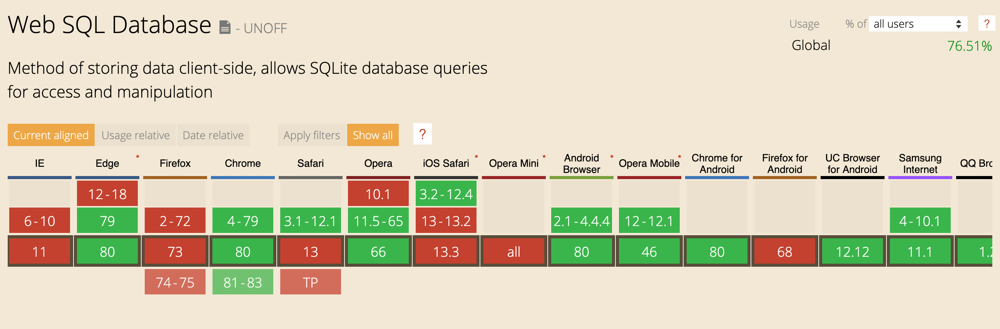
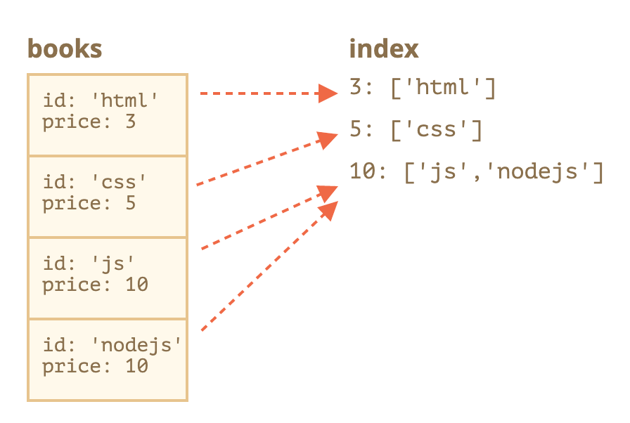
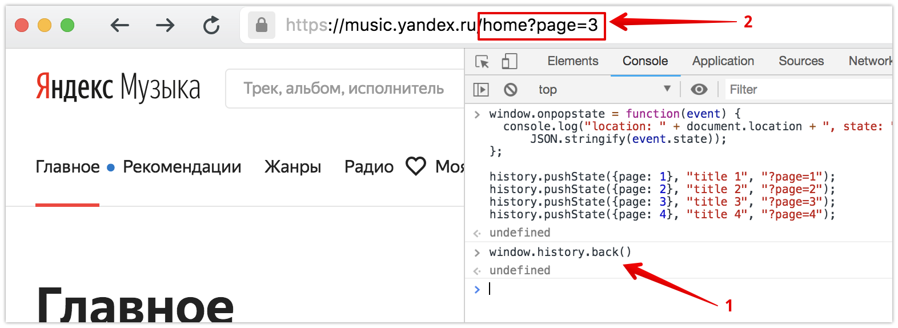
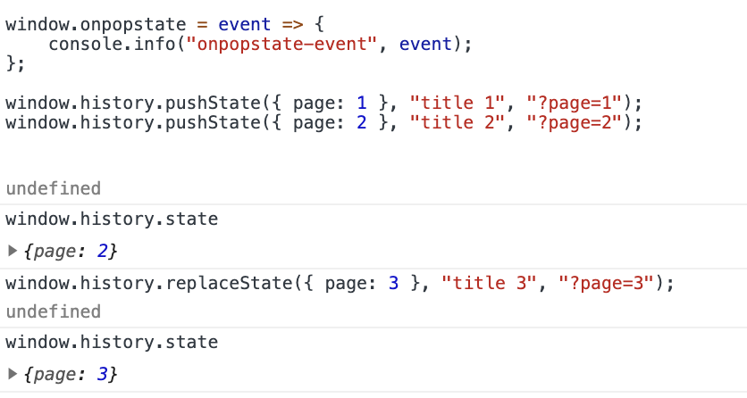

Web Api
Cookies, Storages, IndexedDB, History APi
В данной лекции обсуждается браузерное API


Создание
document.cookie = 'subject=Song'
document.cookie = 'subject=Beautiful-song';
document.cookie = 'volume=5';
document.cookie = 'subject=' + encodeURIComponent('Песня');
// %D0%9F%D0%B5%D1%81%D0%BD%D1%8F
uniq key = name + path + domain
document.cookie = 'subject=Song; path=/users; domain=yandex.ru';
path=/
domain=music.yandex.ru;
path=/users/playlists;
path=/usersplaylists; domain=yandex.ru;
domain=facebook.com;
expires
subject=Song; expires=Tue, 10 Mar 2020 14:20:00 GMT
Чтобы удалить, устанавливаем дату устаревания в прошлом
subject=Song; expires=Tue, 10 Mar 1970 00:00:00 GMT
Чтение
document.cookie = 'subject=Song; path=/';
console.log(document.cookie);
// subject=Song
js-cookie
Cookies.set('subject', 'Song', { expires: 7, path: '' });
Cookies.get('subject');
Cookies.remove('subject');
Отправка на сервер
GET / HTTP/1.1
Host: music.yandex.ru
Cookie: subject=Song; playlist=1
const express = require('express')
const app = express();
const cookieParser = require('cookie-parser');
app.use(cookieParser());
app.use((req, res) => {
console.log(req.cookies);
// { subject: 'Song', playlist: '1' }
});
Отправка на клиент
var express = require('express')
var app = express();
app.use((req, res) => {
res.cookie('subject', 'Song', { path: '/users' });
});
// Заголовок Set-Cookie используется
// для отправки cookie с сервера на клиентское приложение,
// он дает клиенту указание сохранить cookie
Отправка на клиент
var express = require('express')
var app = express();
app.use((req, res) => {
res.cookie('subject', 'Song', { path: '/users' });
});
HTTP/1.1 200 OK
Set-Cookie: subject=Song; path=/users
Отправка на клиент
Заголовок Set-Cookie используется для отправки cookie с сервера на клиентское приложение
Он даёт клиенту указание сохранить куки
Теперь с каждым новым запросом к серверу, при помощи заголовка Cookie, браузер будет возвращать серверу все сохранённые ранее куки
Безопасность
HTTP-only
res.cookie('subject', 'Song', {
path: '/users',
httpOnly: true
});
HTTP/1.1 200 OK
Set-Cookie: subject=Song; path=/users; HttpOnly
Куки HTTP-only не доступны из JavaScript через свойства Document.cookie API, что помогает избежать межсайтового скриптинга (XSS)
По умолчанию куки, установленные сайтом http://site.com, также будут доступны на сайте https://site.com и наоборот.
То есть по умолчанию куки опираются на доменное имя, они не обращают внимания на протоколы.
Secure
res.cookie('subject', 'Song', {
path: '/users',
secure: true
});
HTTP/1.1 200 OK
Set-Cookie: subject=Song; path=/users; secure
Secure
Куки Secure отсылаются на сервер, только если запрос выполняется по протоколу SSL и HTTPS
Начиная с Chrome 52 и Firefox 52, незащищенные сайты (http:) не могут создавать куки с флагом secure.
Кратко
Устаревание
Доступ с сервера
После encodeURIComponent пара name=value не должна занимать более 4Кб
Общее количество куки на один домен – примерно 20+. Точное ограничение зависит от конкретного браузера.
Передаются с каждым запросом в заголовке, который не сжимается
Что делать?
Для статики используйте
cookieless домены (CDN)
В cookie храните id, по которому можно на сервере получить полные данные
Using the Same-Site Cookie Attribute to Prevent CSRF Attacks

WebStorage
SessionStorage хранит данные до окончания сессии (до закрытия вкладки/окна)
if (sessionStorage.hits ) {
sessionStorage.hits = Number(sessionStorage.hits) + 1;
} else {
sessionStorage.hits = 1;
}
// Обновите страницу, чтобы увеличить количество просмотров;
// Закройте окно, откройте его снова и проверьте результат
LocalStorage хранит данные перманентно, пока скрипт или пользователь не удалит их
if (localStorage.hits ) {
localStorage.hits = Number(localStorage.hits) + 1;
} else {
localStorage.hits = 1;
}
// Обновите страницу, чтобы увеличить количество просмотров;
// Закройте окно, откройте его снова и проверьте результат
Далее рассматриваем WebStorage на примере LocalStorage, для SessionStorage – аналогично
Не передаёт данные на сервер, то есть устранены проблемы безопасности, которую представляют куки
Ограничение в 10Mb
Хранилище привязано к источнику
Разные домены определяют разные объекты хранения, они не могут получить доступ к данным друг от друга
Интерфейс
localStorage.setItem('volume', 8);
localStorage.length // 1
localStorage.getItem('volume'); // "8"
localStorage.removeItem('volume')
localStorage.clear();
localStorage.setItem('repeat', 1);
// QUOTA_EXCEEDED_ERROR
Хранит строки, а не объекты
localStorage.setItem(
'options',
{ volume: 8 }
);
localStorage.getItem('options'); // "[object Object]"
// Если нужен объект, нужно сериализовать его
// с помощью JSON.stringify
localStorage.setItem(
'options',
JSON.stringify({ volume: 8 })
);
Storage event
Storage event сигнализирует, что данные в объектах localStorage или sessionStorage были изменены
Storage event
localStorage.colorSetting = 'grey'
// script
window.addEventListener('storage', (event) => {
// When local storage changes, dump this data to the console.
console.log('localStorage', window.localStorage);
console.log('event', event);
});
Storage event
localStorage.colorSetting = 'grey'
window.addEventListener('storage', () => {
console.log('localStorage', window.localStorage);
});
Что в консоли?
length: 1
colorSetting: "grey"
Storage event
localStorage.colorSetting = 'grey'
window.addEventListener('storage', event => {
console.log('event', event);
});
Что в консоли?
key: "colorSetting"
oldValue: null
newValue: "grey"
...
Кратко
Хранение настроек
Хранение промежуточных данных
Строго ограничено источником (origin)
Синхронный интерфейс
WebSQL
Асинхронный интерфейс к SQLite базе
const db = openDatabase('my-app', '1.0', null, 1024 * 1024);
db.transaction(tr => {
tr.executeSql(`
create table if not exists notes(
name TEXT
)
`);
tr.executeSql(`
insert into notes(name)
values("films")
`);
}, console.error);


IndexedDB
Строго ограничено источником (origin)
Нет ограничений на размер*
Асинхронное
Поддерживает транзакции для надёжности
Основная концепция – хранилище объектов, в других БД это «таблицы» или «коллекции»
При этом может быть множество хранилищ: для пользователей, для товаров и т.д.
Хранилище объектов всегда сортирует значения по ключам внутри
Поэтому запросы, возвращающие много значений, всегда возвращают их в отсортированном порядке
Создание
Указываем название (name) и версию (version) базы данных:
const requestDb = indexedDB.open(name, version);
Версия – положительное целое число, по умолчанию 1
У нас может быть множество баз данных с различными именами, но все они существуют в контексте текущего источника (домен/протокол/порт)
Разные сайты не могут получить доступ к базам данных друг друга
Создание
const requestDb = indexedDB.open('my-app', 1);
// Метод open возвращает объект IDBOpenDBRequest
// с тремя обработчиками: onerror, onsuccess, onupgradeneeded
// error – не удалось открыть базу данных
requestDb.onerror = event => {
console.log(event.target.errorCode);
};
Создание
const requestDb = indexedDB.open('my-app', 1);
// Метод open возвращает объект IDBOpenDBRequest
// с тремя обработчиками: onerror, onsuccess, onupgradeneeded
// success – база данных готова к работе,
// готов «объект базы данных»
requestDb.onsuccess = event => {
const db = event.result;
// продолжить работу с базой данных, используя объект db
};
Создание
const requestDb = indexedDB.open('my-app', 1);
// Метод open возвращает объект IDBOpenDBRequest
// с тремя обработчиками: onerror, onsuccess, onupgradeneeded
upgradeneeded – база открыта, но её схема устарела
Про версионирование
Такой механизм отсутствует в серверных базах данных
IndexedDB работает на стороне клиента, прямого доступа к данным нет
Публикуем новую версию приложения – возможно нужно обновить БД
Про версионирование
Локальная версия БД < версия, определённая в open
Возникнет событие upgradeneeded, позволяющее сравнить версии и обновить структуры данных
Также cобытие сработает, если БД еще не существует – можно будет инициализировать
Про версионирование
Впервые публикуем приложение, версия БД = 1
let openRequest = indexedDB.open("store", 1);
openRequest.onupgradeneeded = function() {
// срабатывает, если на клиенте нет базы данных
// ...выполнить инициализацию...
};
openRequest.onerror = function() {
console.error("Error", openRequest.error);
};
openRequest.onsuccess = function() {
let db = openRequest.result;
// продолжить работу с базой данных, используя объект db
};
Про версионирование
К чему приведёт попытка открыть БД более старой версии, чем текущая?
Например, на клиенте база версии 3, а мы вызываем open(...2)
Возникнет ошибка, сработает openRequest.onerror
Про версионирование
Проблема параллельного обновления
Один пользователь. Один сайт. Одна вкладка была открыта до того как выкатили одновление, другая – после
БД одна на 2 вкладки, так как это один и тот же сайт
БД не может быть версий 1 и 2 одновременно
Про версионирование
Проблема параллельного обновления
Чтобы обновить на версию 2, все соединения к версии 1 должны быть закрыты
Про версионирование
Проблема параллельного обновления
При попытке обновления возникает событие versionchange. Нам нужно слушать его и закрыть соединение к базе
Если мы его не закроем, то второе, новое соединение, будет заблокировано с событием blocked вместо success.
Хранилище объектов
Это основная концепция IndexedDB
Мы можем хранить почти любое значение – и сложные объекты, и примимтивы
IndexedDB использует стандартный алгоритм сериализации для клонирования и хранения объекта
Нельзя сохранить объект с циклическими ссылками
Ключи
Каждому значению в хранилище должен соответствовать уникальный ключ
Ключ должен быть одним из следующих типов: number, date, string, binary или array
IndexedDB позволяет установить свойство объекта в качестве ключа
Ключи можно сгенерировать автоматически
Создание хранилища объектов
db.createObjectStore(name[, keyOptions]);
// name – название хранилища;
// keyOptions – это необязательный объект со свойствами:
// keyPath – путь к свойству объекта, которое IndexedDB
// будет использовать в качестве ключа, например id
// autoIncrement – если true, то ключ будет
// формироваться автоматически для новых объектов,
// как постоянно увеличивающееся число.
Создание хранилища объектов (пример)
db.createObjectStore(name[, keyOptions]);
db.createObjectStore('books', { keyPath: 'id' });
// Хранилище объектов books использует свойство id как ключ
Удаление хранилища объектов (пример)
db.deleteObjectStore('books')
Можем добавлять/удалять/обновлять данные вне обработчика onupgradeneeded
Можем создавать/удалять/измененять хранилище объектов только при обновлении версии БД внутри обработчика onupgradeneeded
Любые операции с данными в IndexedDB происходят в рамках транзакции
Это обеспечивает целостность базы данных (в случае сбоя операции транзакция откатывается)
Начинаем транзакцию
db.transaction(store[, type]);
// store – это название хранилища, может быть массивом,
// если нужно предоставить доступ к нескольким хранилищам.
// type – тип транзакции, один из:
// readonly – только чтение, по умолчанию;
// readwrite – только чтение и запись данных,
// создание/удаление самих хранилищ объектов недоступно.
Транзакция versionchange
Такие транзакции могут делать любые операции, но мы не можем создать их вручную
IndexedDB автоматически создаёт транзакцию типа versionchange, когда открывает базу данных, для обработчика updateneeded
Добавление объекта
// Открываем транзакцию
// Указываем, к каким Store будет иметь доступ транзакция
const transaction = db.transaction('notes', 'readwrite');
// В рамках транзакции получаем ссылку на объект Store
const store = transaction.objectStore('notes');
// Выполняем запрос в хранилище
// и добавляем заметку
const request = store.add({
id: 'films',
name: 'films'
});
request.onerror = err => console.error(err);
transaction.abort();
Может быть несколько паралелльных readonly транзакций, но только одна readwrite
readwrite транзакция “блокирует” хранилище для записи
Получение объекта
// Открываем транзакцию
// Указываем, к каким Store будет иметь доступ транзакция
const transaction = db.transaction(['notes'], 'readonly');
// В рамках транзакции получаем ссылку на объект Store
const store = transaction.objectStore('notes')
// Выполняем запрос в хранилище
// Получаем данные, используя значения ключа (id)
const request = store.get('films')
request.onsuccess = note => console.log(note)
Метод get удобно использовать, если знаем ключ, по которому хотим получить данные
А если хотим пройти через все записи в ObjectStore?
Можно воспользоваться курсором
Курсор – особый объект, который пересекает ObjectStore с заданным запросом и возвращает по одному ключу/значению за раз, таким образом экономя память
Чтобы получить все объекты, используем курсор
const requestCursor = db.transaction(['notes'], 'readonly')
.objectStore('notes').openCursor();
requestCursor.onsuccess = event => {
const cursor = event.target.result;
if (cursor) {
console.log(cursor.key, cursor.value);
cursor.continue();
} else {
console.log("No more notes");
}
};
Основное отличие курсора в том, что request.onsuccess срабатывает несколько раз: по одному разу для каждого результата
Что использовать, если хотим искать по условию?
Например, нужно найти Заметки с именем Films?
Использовать индексы
Индекс – это “надстройка“ над хранилищем, отслеживающая заданное поле объекта.
Для каждого значения этого поля хранится список ключей для объектов, имеющих это значение.
Пример индекса
Создание индекса
objectStore.createIndex(name, keyPath, [options]);
// name – название индекса;
// keyPath – путь к полю объекта,
// которое индекс должен отслеживать;
// option – необязательный объект со свойствами:
// unique – если true, тогда в хранилище может быть только
// один объект с заданным значением в keyPath
// multiEntry – используется, если keyPath является
// массивом
Создание индекса (пример)
openRequest.onupgradeneeded = function() {
let books = db.createObjectStore(
'books', { keyPath: 'id'}
);
// должны создать индекс в versionchange транзакции
let index = inventory.createIndex(
'price_idx', 'price'
);
};
// Храним книги с ключом id и хотим сделать поиск по price;
// price неуникальное, опцию unique не устанавливаем,
// price не является массивом, флаг multiEntry не применим
Использование индекса (пример)
let transaction = db.transaction("books"); // readonly
let books = transaction.objectStore("books");
let priceIndex = books.index("price_idx");
let request = priceIndex.getAll(10);
request.onsuccess = function() {
if (request.result !== undefined) {
console.log("Книги", request.result); // цена книги 10
} else {
console.log("Нет таких книг");
}
};
Поиск по диапазону (пример)
let transaction = db.transaction("books"); // readonly
let books = transaction.objectStore("books");
let priceIndex = books.index("price_idx");
let request = priceIndex.getAll(IDBKeyRange.upperBound(5));
// IDBKeyRange – объекты, задающие «диапазон ключей»
request.onsuccess = function() {
if (request.result !== undefined) {
console.log("Книги", request.result);
// цена книги < 5
} else {
console.log("Нет таких книг");
}
};
const db = new Dexie('MyDatabase');
db
.version(1)
.stores({
notes: 'name'
});
db
.open()
.catch(error => console.error(error));
db
.notes
.where('name')
.equals(['films'])
.each(note => {
console.log(note.name);
});
SPA
Приложение быстро загружается и работает
Необходимые приложению статические ресурсы подгружаются один раз
Контент формируется динамически без перезагрузки страницы
Приложение становится похожим на нативное
Тяжело делать SEO оптимизацию
Изначально технология предоставляла возможность только менять содержимое страницы без её перезагрузки
Разработчики научились загружать отдельные страницы с помощью JavaScript так, чтобы одновременно:
- менялось содержание
- генерировался новый адрес страницы
History API
History API опирается на один DOM интерфейс — объект History. Он доступен через window.history

Основные методы и свойства объекта History
window.history.length
window.history.state
window.history.go(n)
window.history.back()
window.history.forward()
window.history.pushState(data, title [, url])
window.history.replaceState(data, title [, url])
window.history.length – cвойство length хранит количество записей в текущей сессии истории
window.history.length
// 10

window.history.state – cвойство state хранит текущий объект истории
window.history.state
// { history.id: 0 }

window.history.go(n) – метод, загрузить конкретную страницу из истории сессии, определяемую относительной позицией к текущей странице
Остаться на текущей странице – window.history.go(0)
window.history.back() – метод, позволяющий перемещаться назад по истории

window.history.back()

window.history.forward() – метод, позволяющий перемещаться по истории. Идентичен вызову window.history.go(1)
window.history.pushState(state, title [, url]) – метод, добавляющий новое состояние в историю браузера
state – любой валидный тип в JavaScript, который можно сериализовать
title – все современные браузеры игнорируют этот параметр
url – относительный/абсолютный URL новой записи в истории браузера
window.history.pushState(state, title [, url]) – метод, добавляющий новое состояние в историю браузера

window.onpopstate = event => {
console.info("location: " + document.location + ", state: " +
JSON.stringify(event.state));
};
window.history.pushState({ page: 1 }, "title 1", "?page=1");
window.history.pushState({ page: 2 }, "title 2", "?page=2");
window.history.pushState({ page: 3 }, "title 3", "?page=3");
window.history.pushState({ page: 4 }, "title 4", "?page=4");
window.history.back();

window.history.replaceState(state, title [, url]) – метод, обновляющий текущее состояние истории браузера

Cобытие popstate
Не вызывает событие
window.history.pushState()
window.history.popState()
Вызывает событие
window.history.back()
window.history.forward()
Совершение действий в браузере
(нажатие стрелок для движения по истории)
window.onpopstate = event => {
console.info("onpopstate-event", event);
};
window.history.pushState({ page: 1 }, "title1", "?page=1");
window.history.pushState({ page: 2 }, "title2", "?page=2");
window.history.replaceState({ page: 3 }, "title3", "?page=3");

window.history.back();